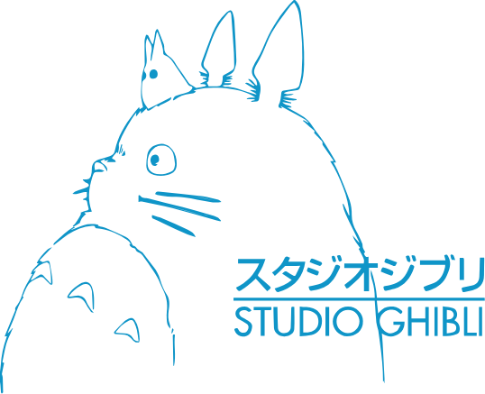

A Short List of Ghilbi Movies
Created and Directed by Hayao Miyazaki
A goldfish princess encounters a human boy named Sosuke, who names the princess 'Ponyo'.
The princess becomes more human-like as her relationship with Sosuke develops and much to her
Father's dismay, does not wish to return back to the Ocean. Unfortunately, her desires to live on the
surface has allowed magic to endanger Sosuke's entire village.

Satsuke and her younger sister Mei have moved into a house closer to their mother's hospital,
where she receives care for an unexplained illness. They soon discover that their new house still has existing tenants
in the form of playful spirits, and welcome their new friends into their new lives. The most notable being a giant, cuddly spirit named 'Totoro'.
A story of a young girl named Kiki and her talking cat Jiji who leaves her village to begin
her training as a young witch. As she learns to develop her skills, she starts a delivery service which soon becomes a fixture in her
new community. Hard work is exhausting, and soon begins to feel the effects of her new found work as she falls into a pit of despair.
Sophie encounters and befriends a young Wizard named Howl who lives in a flying castlee.
The evil Witch of Waste takes notice of their budding relationship and in her jealously, cast a spell upon Sophie
which makes her age prematurel. Howl must use all his magical gifts to defeat the witch and cure Sophie.

Chahiro and her parents encounter an abandoned amusement park on their way to their new home.
As the sun sets, the seemingly abandoned parked transforms with life and her parents are turned into giant pigs.
Chahiro meets a boy named Haku who explains the park is a resort for the supernatural and she must work at the resort into
order to find a way to turn her parents back into their former selves.
In the 14th century relations between Gods, Humans and Animals begin to sour. The harmony they onced shared
begins to collapse and Ashitaka, a boy from a small village, is infected with a curse and must seek a cure from the supernatural.
During his travels, Ashitaka witnesses the destruction caused by these conflicts and tries to broker peace between the factions.